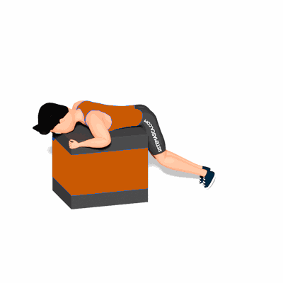

Extensão de Quadril Alternada/Duas Pernas na Caixa

O exercício trabalha o fortalecimento dos músculos da cadeia posterior, com enfoque na região dos glúteos.
Ficha Técnica
Tipo: Funcional
Grupo Muscular: Glúteo
Aparelho: Nenhum
Músculos: Nenhum
Como realizar
- De frente a uma caixa, apoie a barriga sobre ela e segure nos cantos da caixa com as mãos;
- Forme uma linha reta dos ombros aos quadris;
- Mantendo as costas retas, comprima os glúteos e estenda uma perna o máximo que conseguir;
- Faça uma pausa e, em seguida, abaixe a perna e repita o movimento com a outra perna;
- Faça uma pausa novamente e, em seguida, abaixe a perna e agora estenda as duas pernas simultaneamente. 6. Agora retorne a posição inicial e repita os movimentos pela quantidade de vezes orientada pelo professor(a).
 RC STORE
RC STORE